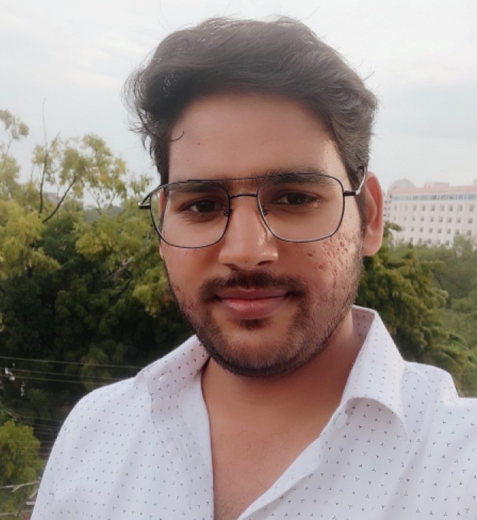

Shantanu Rastogi
Team Leader with 8.5 Years in Operations | Aspiring Front-End Web Developer | Passionate About Coding & Problem
Solving
Summary
Aspiring Full-Stack Web Developer currently expanding expertise through The Complete Full-Stack Web Development
Bootcamp by Dr. Angela Yu. Backed by 8.5 years of experience in operations leadership within healthcare and
service sectors, bringing problem-solving, team management, and process optimization skills. Passionate about
building responsive and user-friendly web applications while continuously learning and improving. Seeking an
opportunity to apply my technical skills and operational expertise in a dynamic development environment.
Education
-
B.Com-
Lucknow Christian College (2015)
- Intermediate - St Joseph Montessori School (2012)
- High School - City Montessori Inter College (2010)
Work experience
-
Freelance Web Developer | Personal Projects (2025 – Present)
- Developed multiple responsive web applications using HTML, CSS, and JavaScript.
- Built a portfolio website to showcase projects.
- Continuously learning React.js, Node.js, Express.js, and MongoDB to expand
full-stack capabilities.
- Collaborated with online developer communities for feedback and improvement.
-
Team Leader Operations |
Dec 2020 - Present
- Led teams in process optimization, quality assurance, and customer service within
healthcare and
service operations.
- Managed cross-functional collaboration to improve efficiency and compliance.
- Developed problem-solving and analytical skills, which translate well into
debugging and web development.
-
Operations Specialit |
Apr 2018 - Dec 2020
- Managed daily operational tasks related to healthcare
service delivery.
- Assisted in data analysis & reporting, improving
decision-making for process optimization.
- Handled customer service inquiries and ensured
timely issue resolution.
- upported compliance audits by maintaining accurate
documentation.
- Ensure compliance with industry regulations and
company standards through regular monitoring and
documentation.
Skills
Technical Skills
- HTML, CSS, JavaScript (Core front-end development)
- Responsive Web Design (Building mobile-friendly websites)
- Version Control (Git & GitHub) (Collaboration & code management)
Transferable Skills from Operations Experience
- Problem-Solving & Debugging (Critical thinking in troubleshooting code)
- Process Optimization (Efficiency in writing clean and maintainable code)
- Team Leadership & Collaboration (Working in development teams, Agile methodology)
- Data Analysis & Reporting (Understanding databases, structured thinking)
- Attention to Detail (Essential for debugging and UI/UX improvements)
- Time Management & Multitasking (Handling multiple projects and deadlines)
Other